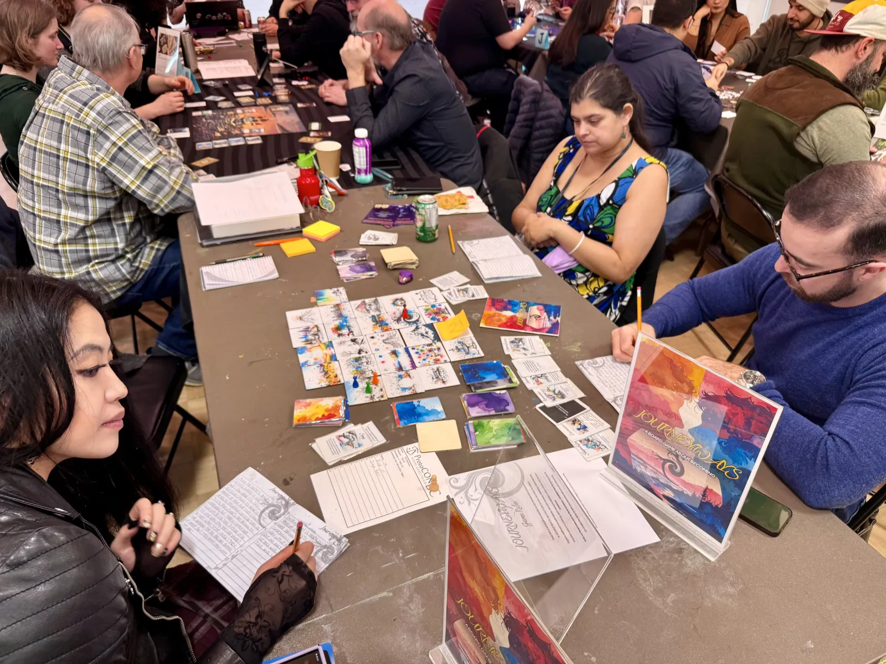
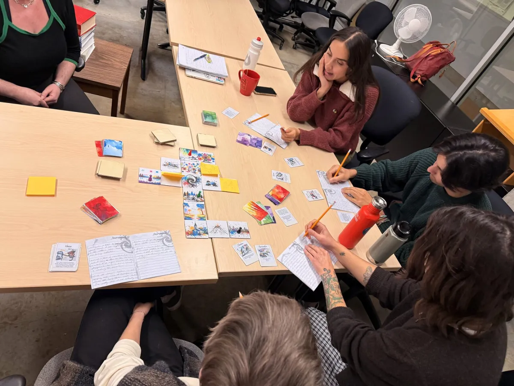
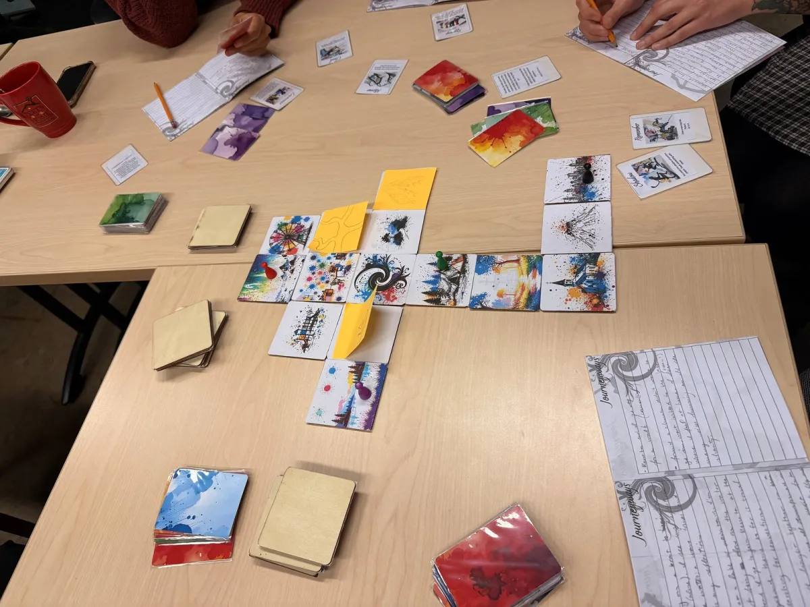
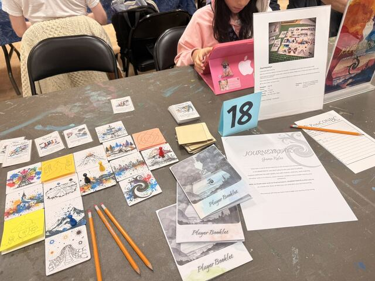
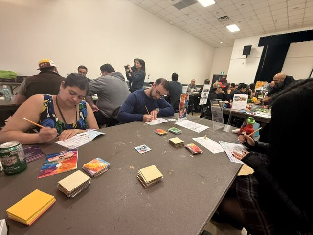
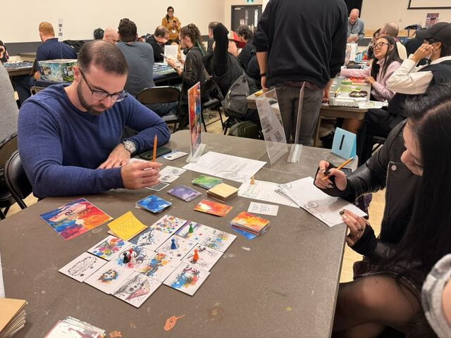
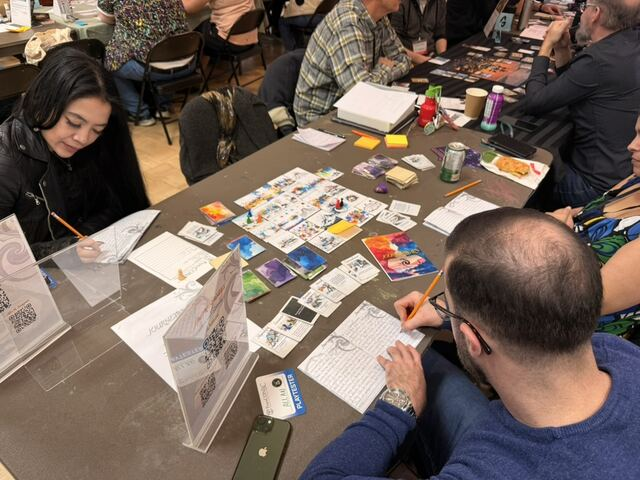

From the table.
Playtests, components, and play in action.
Photographs from JOURNEYWAYS sessions and material studies. Captured at ProtoConBC (Vancouver, October 2025) and during the EDGES research group at UBC (November 2025), with components staged for product photography in between.





Hall
ProtoConBC, Vancouver. October 2025. JOURNEYWAYS featured at table 18 of the convention. Strangers became players for an hour or two; some wrote, some drew, some kept the rulebook open beside them.

On the table
The booth: rulebook, player booklets, the table-18 placard, and a player working through their first session.

In the hall
The convention room mid-afternoon, with a "Looking for players" sign on the table and the room a low murmur of focused writing.

Two players
A pair of strangers became playmates for an hour. Booklets open, cards spread, the map laid down between them.

Mid-session
A wider angle of the same session: several players writing at once, the table covered in tiles, character cards, and pencils.

Pieces
The components, photographed without players. Tiles, cards, tokens, booklets. Staged on a wood surface to read like a still life of the game's material vocabulary.

Board game setup
JOURNEYWAYS featured at ProtoConBC, October 2025. Initial board configuration: tiles, cards, and play space ready for solo or group play.

Board game components
Cards, tiles, tokens, and player booklets laid out for play.
Click any image to enlarge.